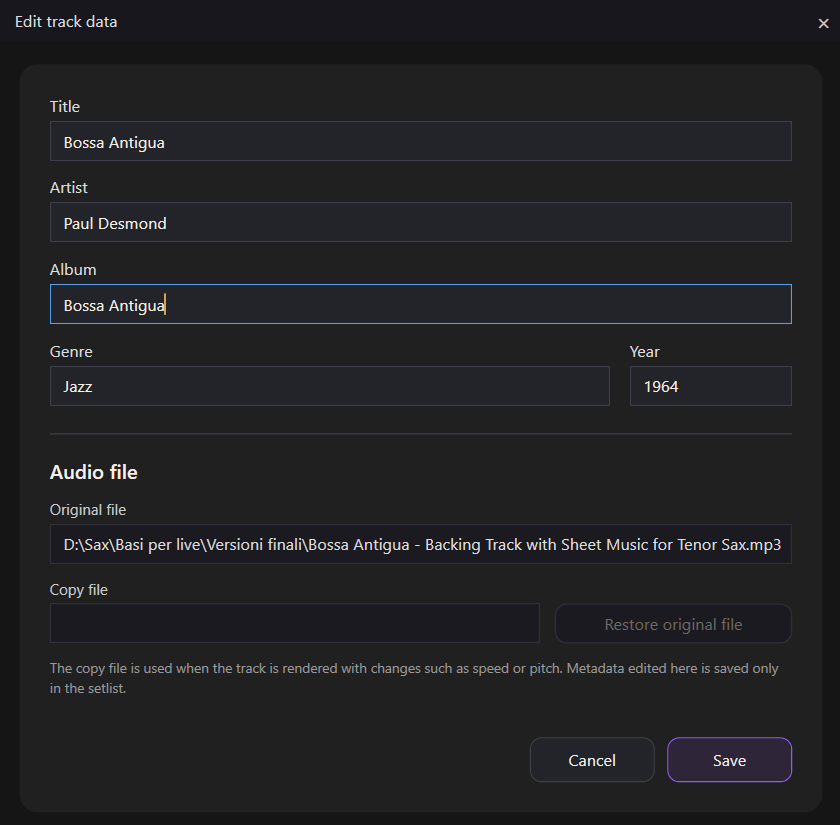
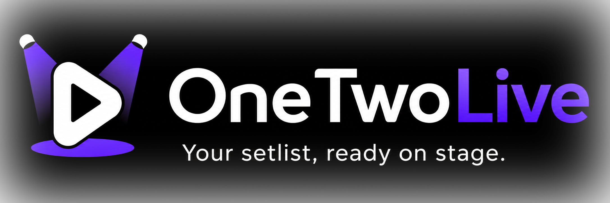
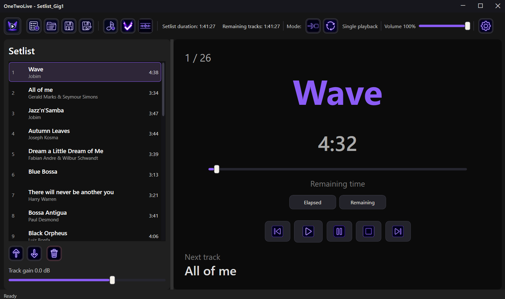
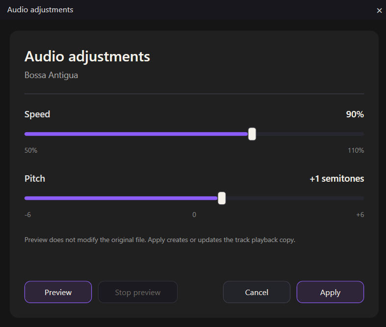
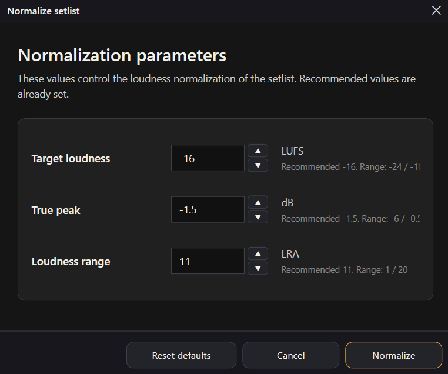
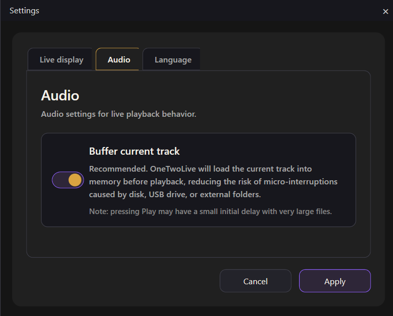
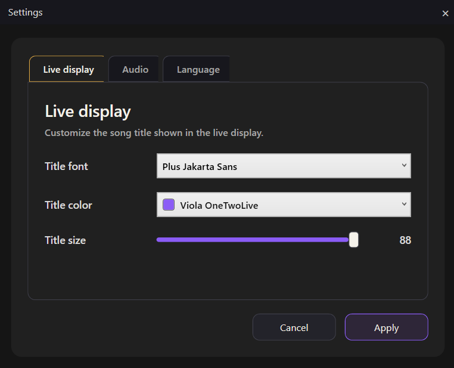
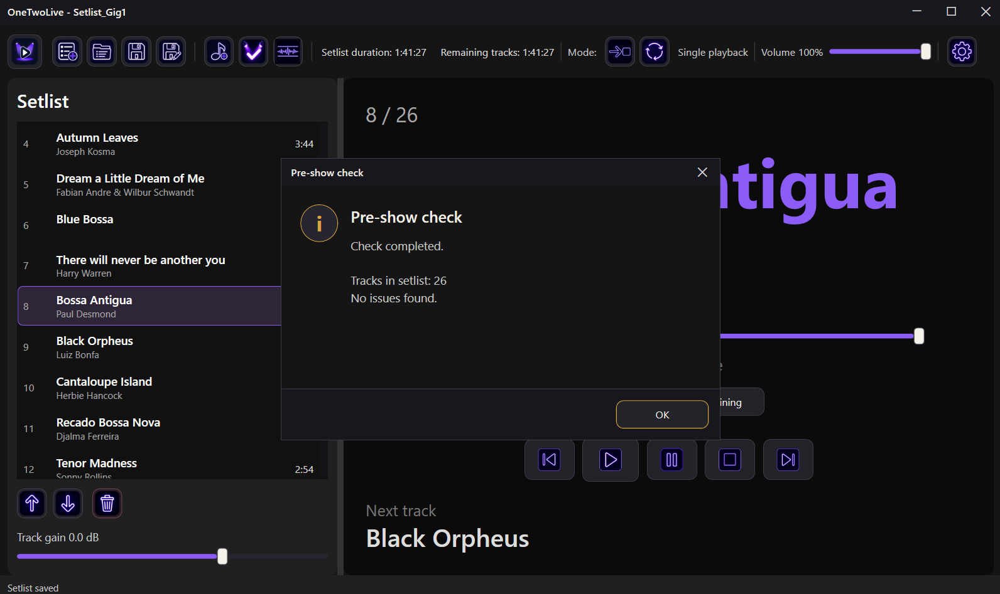

Edit track data
Update titles, artists and playback information while keeping the original audio files unchanged.

A Windows audio player designed for musicians who need a simple, reliable and stage-friendly way to manage and play their setlists.

Features
OneTwoLive helps you prepare, organize and perform your setlists through a clear interface designed for stage use.

Update titles, artists and playback information while keeping the original audio files unchanged.

Adjust playback speed and pitch and create a dedicated rendered copy without modifying the original track.

Balance playback levels across your setlist and reduce unwanted volume differences between tracks.

Choose how tracks are loaded according to the available memory and the needs of your live setup.

Show essential playback information on a dedicated screen with a clear layout designed to be readable on stage.

Verify that all tracks are available before the performance and identify missing files in advance.
You do not need to rebuild your setlists from scratch when you change computer. Select the new folder containing the audio files and OneTwoLive can recover the existing setlist references.
Stage-ready interface
OneTwoLive keeps playback controls, track information and your complete setlist within immediate reach, through an interface designed to remain clear and readable during a live performance.
Get OneTwoLive
OneTwoLive is available as a free demo with up to 5 tracks per setlist. A lifetime personal license unlocks full setlists on up to 2 PCs.
Microsoft Store
OneTwoLive is being prepared for Microsoft Store distribution. The Store version will follow the same demo and license model.
Direct purchase
Buy directly from the official OneTwoLive website and receive your personal license key for the full version.
The demo version supports up to 5 tracks per setlist. The full license removes this limit.
Support
For technical support, installation questions or product information, contact the OneTwoLive support team.
support@zephyros-studio.com